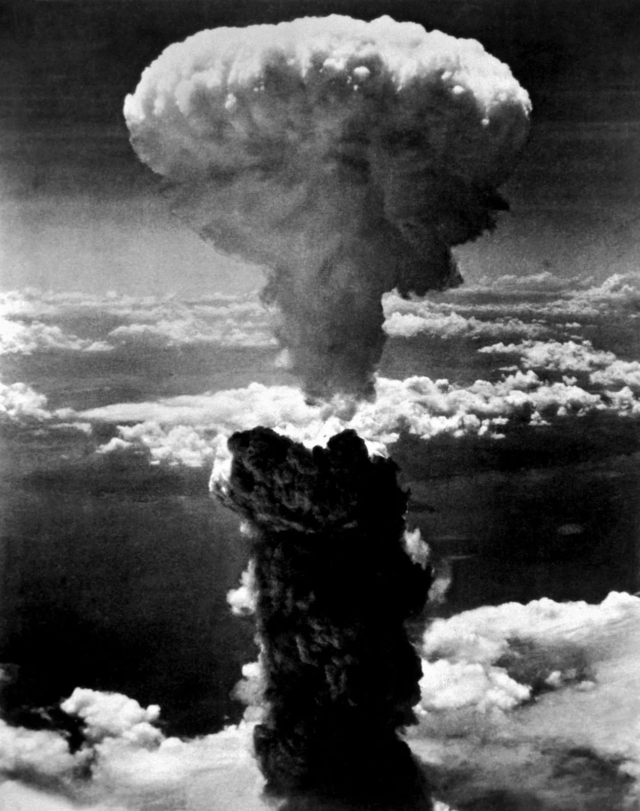
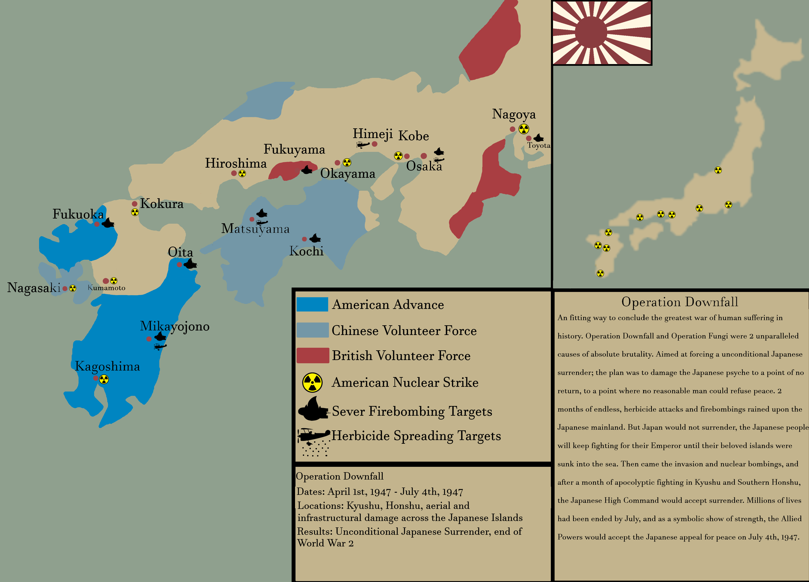

What resulted from the US dropping the atomic bombs?
- The US forced Japan to surrender
- There was assive destruction on the Japanese cities of Hiroshima and Nagasaki
- Japanese aggression in WWII was stopped

|
Alternative Outcome?
- The US would have planned a sea invasion
- A US victory would have occurred, but with a longer,
more brutal fight, due to Japanese extremists and propaganda
- Operation Downfall would have occured, a proposed Allied
plan for invasion of Japanese home islands
- the Japanese people would have fought until they went extinct and
continued fighting even after no hope was left
- There would have been more casualties on the US and Japanese side
- The USSR would have taken some portion of Japanese territory as their
involvement would have been necessary

|